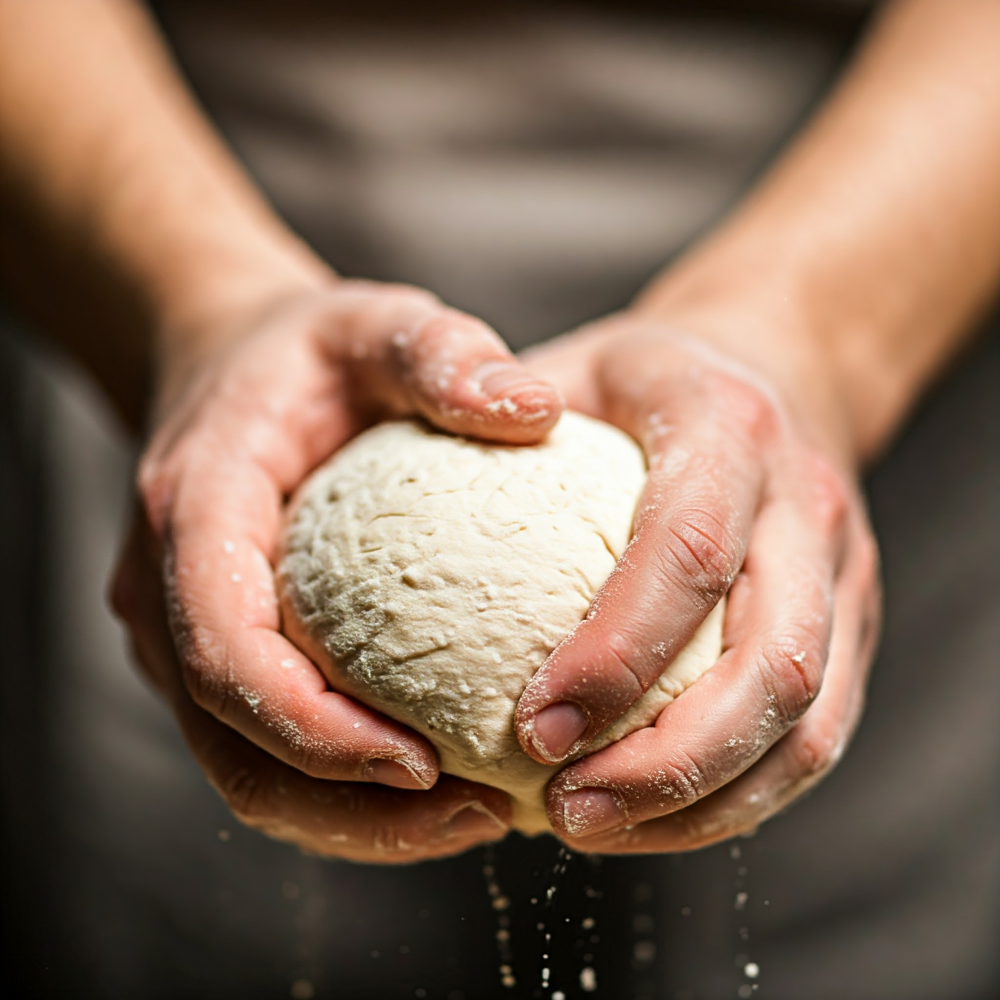
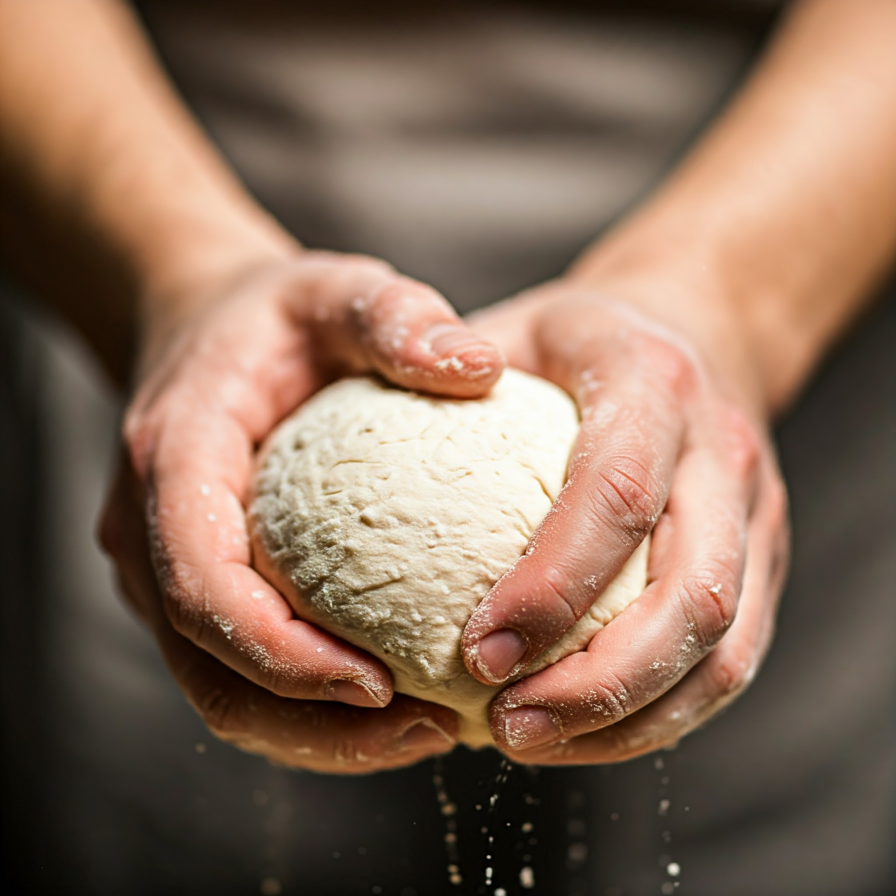

Pão Perfeito: Segredos e Receitas para um Sabor Inigualável.
Este eBook é um guia completo para todos que desejam mergulhar no mundo da panificação. Com receitas simples e técnicas comprovadas, você aprenderá a fazer pães deliciosos e saudáveis, criando experiências inesquecíveis para você e sua família.
Ideal para iniciantes e amantes da culinária, este guia oferece um passo a passo claro e acessível, desmistificando a arte de fazer pão em casa.
Conteúdo do eBook
Este eBook contém mais de 50 receitas e dicas, incluindo:
- Pães Tradicionais: Aprenda a fazer pães como o francês, italiano e integral.
- Pães Especiais: Receitas para pães de cebola, azeitona e outros sabores únicos.
- Pães Sem Glúten: Opções deliciosas para quem tem restrições alimentares.
- Fermentação Natural: Aprenda a criar e cuidar do seu próprio fermento.
- Conservação: Dicas para manter seu pão fresco por mais tempo.
Além disso, você encontrará dicas sobre utensílios essenciais e como configurar sua cozinha para a panificação.
Perguntas Frequentes
1. Posso fazer pão se nunca cozinhei antes?
Sim! Este eBook é perfeito para iniciantes. As receitas são simples e fáceis de seguir.
2. Quanto tempo leva para fazer pão?
A maioria das receitas leva de 2 a 4 horas, incluindo o tempo de fermentação e assado.
3. Preciso de equipamentos especiais?
Não! Você pode fazer pão com utensílios comuns de cozinha. O eBook inclui uma lista de utensílios recomendados.
4. E se eu não estiver satisfeito com o eBook?
Oferecemos uma garantia de reembolso de 7 dias. Se você não estiver satisfeito, basta entrar em contato!
 
